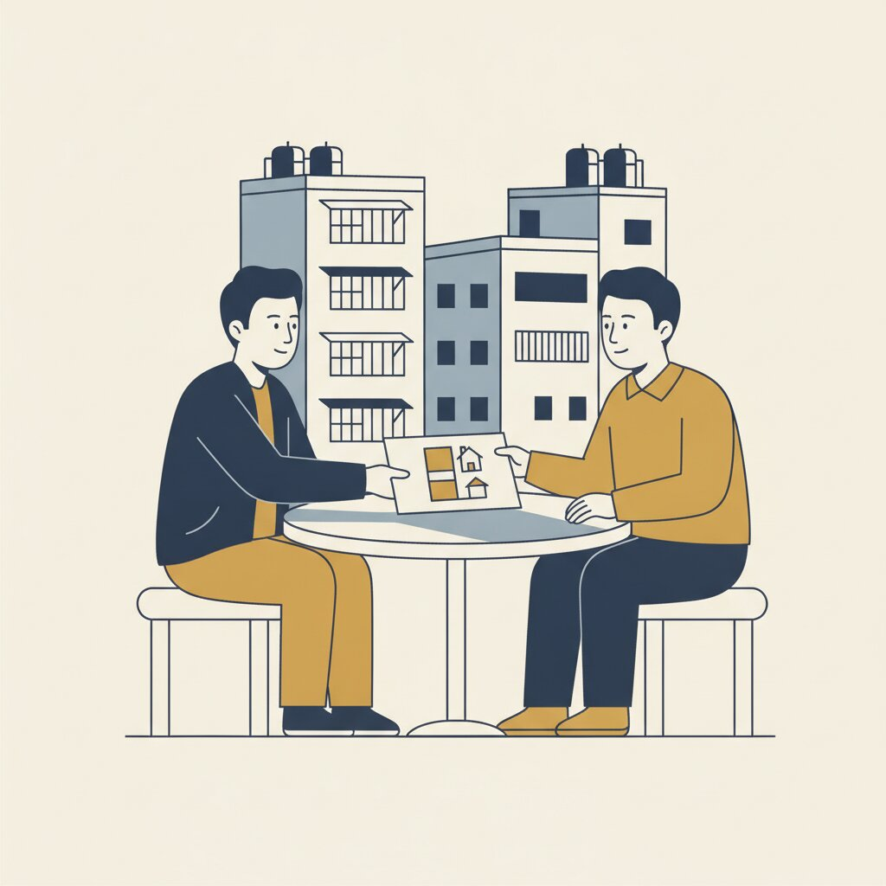
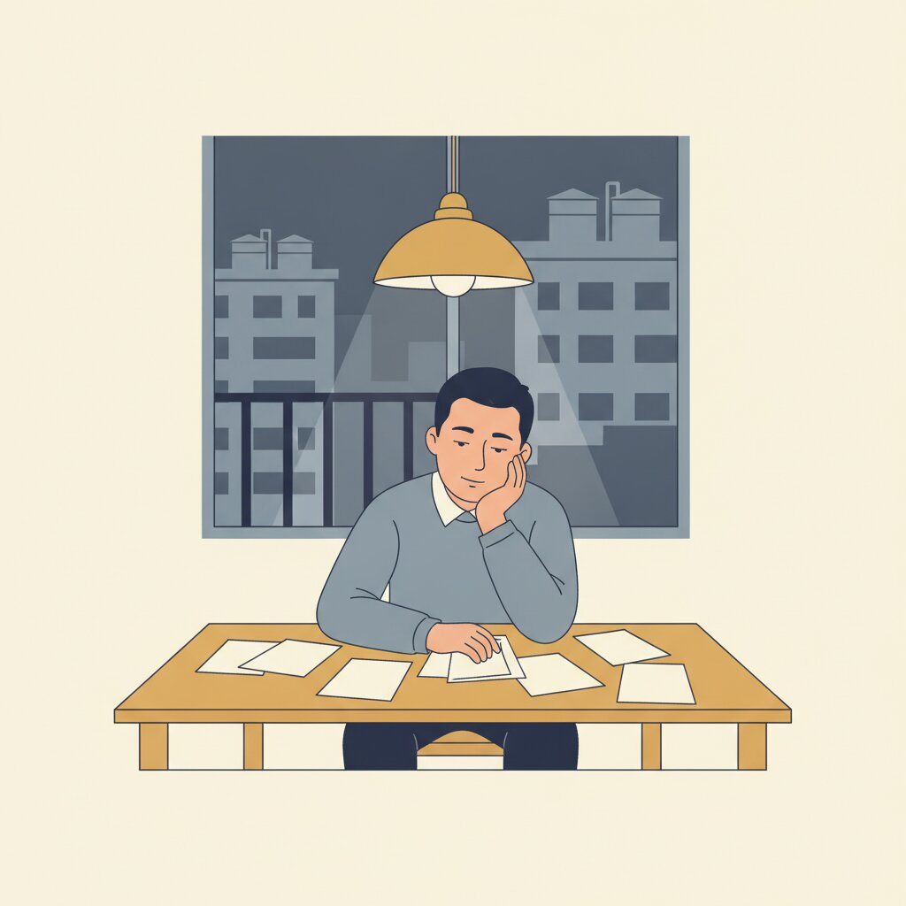

真實案例，已去識別化。只寫數字與流程。
「還款都由我負責」
趙先生（化名），南港老公寓屋主。朋友找他投資土地項目，說還款全部由朋友代繳。從 100 萬開始，越滾越大，民間借款累積到 900 萬。後來才知道，根本沒有土地項目，錢全被挪用。

民間借款 900 萬，每個月光利息 16 萬；原有銀行貸款 200 萬，月繳 10,598 元。合計約 17 萬。錢都被朋友拿走，銀行貸款開始遲繳，信用因此損毀。900 萬的民間設定登記在謄本上，公股銀行問一圈，全部碰壁。
怎麼走的：六步，三個月
-

先止血
把所有債權人、金額、設定全部列出來。先知道洞有多大，才知道要填多少。
-

看房子
南港老公寓的擔保空間，實價登錄加周邊行情。
-
找對承作機構
公股銀行碰壁，不代表沒有路。比對信用有瑕疵仍可評估的機構，本案為農會。
-

誠實交代來龍去脈
遲繳的原因、資金的流向、朋友的角色，一次講清楚。文件補齊。
-

核准、撥款、代償
一筆清償 900 萬民間借款與 200 萬銀行貸款，塗銷民間設定。
-

每月一筆
整合後每月繳農會利息約 4 萬。從評估到核准，3 個月。
十七萬變四萬
每月約 17 萬，變成每月利息約 4 萬。
真實案例、已去識別化，不是通案。信用損毀後能否重新評估、由哪類機構承作，依個案而定；本案整合後每月繳的是利息，本金另依契約約定清償；總利息支出可能增加。最終核貸由金融機構決定。
這個案子教的三件事
- 「幫你繳」的投資邀約，先查有沒有那個項目。
- 錢不經自己的手，就不是自己的投資。
- 別人替你借的，設定在你的謄本上，就是你的。
我們做什麼、不做什麼
鋮馨不是銀行、不是金融機構、不放款。我們盤點債務、估擔保空間、比對機構、陪你把來龍去脈講清楚。核不核貸由金融機構決定。評估後不適合，我們直接說。不申請不收費，面談不收費。
免費評估你的狀況
LINE 加 → https://lin.ee/PHIfSoY
電話 → 02-2249-0517 / 0958-139-786
新北市中和區中正路 468 號
不申請不收費，面談不收費。
本文為一般資訊分享，非要約或個案承諾。貸款方案條件均依個案財務狀況、不動產與擔保條件及市場情況而定；本公司非金融機構，提供諮詢與媒合協助、非資金提供方，最終核貸由金融機構決定。申請前請詳閱契約條款，並衡量自身還款能力。